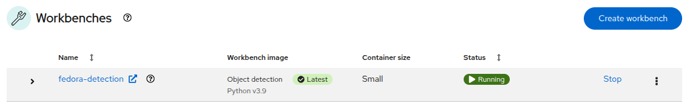
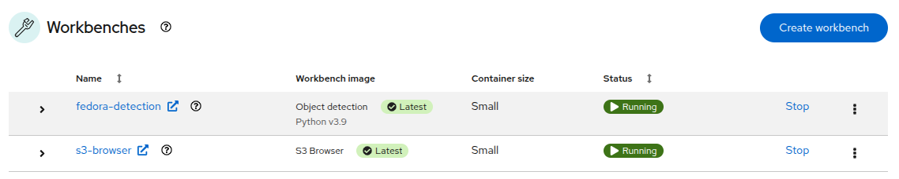
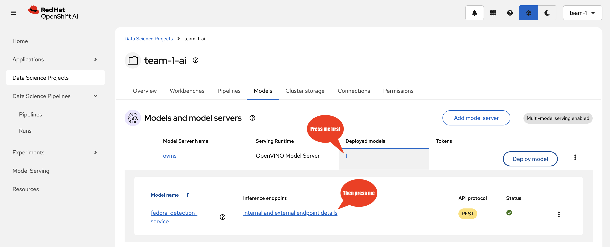

Data Science
As Data Scientists, we have been given a task to provide a robot the understanding of what a red hat (a fedora) looks like, correctly identify it and act on the object detection. You will be fine tuning an object dection model from the YOLO-family (You Only Look Once), on a set of fedora images we prepared for you. To achieve this we will use OpenShift AI, an extension to OpenShift that provides a platform for Data Scientists to work with their favourite tools and libraries.
Instantiate Workbench
Let’s login into OpenShift AI
|
Most of the applications you are about to use are enabled for Single Sign-On using Red Hat build of Keycloak. So when you first access the OpenShift Console, you’ll be directed to Keycloak for authentication. |
-
Login into the Keycloak Realm by accessing the OpenShift Console with:
-
username:
team-1 -
password :
secret-password
-
After you have authenticated you’ll get to the OpenShift Console.
-
Click Skip tour
-
Click on the top right menu with the squares and select OpenShift AI to access the OpenShift AI Dashboard

-
Click on Login with OpenShift
-
Thanks to the SSO magic you don’t have to authenticate again
This is the main Console where all Data Science related projects and assets are managed.
-
In the left menu click on Data Science Projects to see all available Data Science Projects
-
A project has already been prepared for you to work in
-
Click on the project
team-1-ai
As Data Scientists, we are in need of an interactive developement environment(IDE) to do our programming. One of the most common one (and provided by OpenShift AI) is JupyterLab. Let’s create a new JupyterLab Workbench in our Data Science project and get started:
-
Click on Create Workbench
-
Enter these fields :
-
Name:
fedora-detection -
Notebook image
-
Image selection:
Object Detection
-
-
Deployment size
-
Container size: 'Small'
-
-
Cluster storage
-
Click on Attach existing storage
-
Select
object-detection-training-pvcconnection -
Standard Path
object-detection-training-pvc -
Click on Attach storage
-
-
-
Connections
-
Click on Attach existing connections
-
Select
workbench-bucketconnection
-
Click on Attach
-
-
-
-
Click on Create Workbench
Wait until the Status of the Workbench is changed from "Starting" to "Running", this can take 2-3 minutes.

Create your Model in JupyterLab
-
Click on the Open link, next to the Workbench name link to open the JuypterLab Workbench
The first thing we notice when logging into our workbench is that it’s quite empty. If this is your first time seeing JupyterLab, take a couple of minutes to look around! But don’t worry, we are experienced Data Scientists who know the importance of documentation, version handling and reproducability. Therefore, in JuypterLab we are going to clone a complete JuypterNotebook to get started with our object detection project:
-
In the menu on the left, click on the Git icon
-
Click on Clone a Repository
-
Enter the Git Url to the notebooks repo that has been prepared for you:
https://gitea.apps.example.com/team-1/object-detection-notebooks.git -
Click on Clone
-
On the left side in the menu click on the Folder icon.
Next, we will train our model on the basis of a Yolo5 Image Detection model to identify fedoras by providing sample images. The whole training process will run in a Pipeline leveraging OpenShift resource scaling.
We will provide sample images but you will add some images of your own as well to customize this model yourself. After the training, the model will be exported in onnx format to your S3 ODF (OpenShift Data Foundation) bucket. In this format we can deploy it to an inferencing service on OpenShift AI and serve it to our application.
The Training Images
To stay in the boundaries of the resources available to us, we provide around 100 images of a Red Hat Fedora together with the label metadata to train our base model with.
|
Labeling in object detection is the annotation of raw image by humans, where bounding boxes are drawn around specific objects and assign a class label (e.g., "car", "person," "tree". Or "fedora"…) to each object. This basically teaches the base model to recognize a new class of objects. |
Since we deliberately don’t have a lot of variations in the images this will lead to a model that will recognize this particular Fedora pretty well, but not one that deviates slightly. This is commonly called "overfitting" and usually avoided, but in our case for demo and fun it’s fine.
If you would like to get a idea what the images look like, in your JupyterLab Notebook navigate to the folder object-detection-training-pvc/custom_training_images/fedora/images/ and open some of the images. You’ll see slight variations of a Red Hat Fedora in front of varying backgrounds.
Labeling data in form of a bounding box around the object in question "tells" the model during the training what part of the image is actually the Fedora. This data is kept in a different folder, if you go to the folder labels you’ll see text files, each corresponding to one of the images. If you open one of the label files there are coordinates of a rectangle, this describes the bounding box.
Image Labeling
Since image preparation and labeling is an important part of working in data science, even if we provide the training image data set we’d like to provide you with the opportunity to learn how images are labeled. You’ll basically add some more images to the training data yourself.
There are a good number of tools available for this task, we’ll use a well-known Open Source project called Label Studio. Label Studio runs in OpenShift, of course, and was already deployed for you.
-
Login into the Label Studio with:
-
E-Mail Address:
team-1@example.com -
Password :
secret-password
-
This will take you to the Label Studio Welcome page.
Configure Label Studio
Click Create Project to get started:
-
Project Name:
Fedora -
Click Save
Now you have to configure Label Studio for the way you going to label the images. Click Settings to the upper right, then:
-
Choose Labeling Interface from the menu to the left
-
Click on Browse Templates
-
From Computer Vision choose Object Detection with Bounding Boxes
-
Under add label names there will be two labels ("Airplane" and "Car") preconfigured, delete them by clicking the red X.
-
In the text box enter our label "Fedora" and click Add
-
Click Save
-
Return to the Project overview by clicking Fedora in the breadcrumb-style path at the top.
You’ll be greeted with Looks like you have not imported any data yet… true, we need some images first before we can proceed to labeling them:
-
Click Go to import
-
Take some images of the Fedora on the floor with your mobile phone. Make sure they are in jpg-format.
-
Or use these two images:
-
-
Make sure the camera is taking pictures in JPG format and not HEIC or any other fancy format… :-)
-
If the file extension is not jpg (but jpeg), rename the extension.
-
Transfer them to your laptop and upload them via Upload Files, you can upload multiple images at once.
-
Click Import
{kind=link}
{kind=link}
Your UI should now look like this, obviously with different images… ;-)
Label your Images
Now it’s time to actually label the images.
-
Click the images to start
-
You’ll get into the labeling interface. To label a class, you have to choose it at the bottom. We only have on class, Fedora, so click to activate it.
-
Now in the image draw a rectangle by holding the left mouse button as close to the Fedora as close as possible.
-
Click Submit
Congrats, you have just labeled your first image! Now do the same for the rest of your images. When you are done with labeling you can use the images with their labels for training the model. We just have to transfer them to your JupyterLab Notebook to add them to the training images.
Transfer Labeled Images
-
On the overview page of your Label Studio project (click on the Fedora in the breadcrumbs menu) click Export
-
and as format choose
YOLO with Images. -
Click Export
This will download a zip file with the images and label metadata to your laptop. Inspect the content of the file, you’ll find an images and a labels folder with the same content format you have in the training images provided by us.
|
Transfering the labeled images via zip file is of course not the way you would do this in the real world, here you would use e.g. an S3 bucket for data transfer. |
Now add the images to the training images in the JupyterLab Notebook:
-
Unpack the zip file
. ├── classes.txt ├── images │ ├── 6778ae02-fedora-demo-image-2.jpg │ └── ea65fd5b-fedora-demo-image-1.jpg ├── labels │ ├── 6778ae02-fedora-demo-image-2.txt │ └── ea65fd5b-fedora-demo-image-1.txt └── notes.json 3 directories, 6 files -
Go back to your JupyterLab notebook
-
open the folder
object-detection-training-pvc/custom_training_images/fedora/ -
Open the
imagesfolder-
upload your images using the Upload Files button.
-
Select the all images in the
imagesfolder of the zip file.
-
-
Open the
labelsfolder-
upload your label files using the Upload Files button.
-
Select the all label files in the
labelsfolder of the zip file.
-
Now you are ready to train your model!
Model Training
|
When training the model the confidence score and accuracy will be a limiting factor going forward. In order to stay within hardware restrictions such as no GPUs in the data center and the physical robot, a compromise has been made in terms of the size of the base model as well as training epochs, batch size, number of images to train upon and how much time will be left on the hackathon for other tasks. Of course, these variables may be changed by you attendees, however, the changes such as increased epoch and increased sample count might yield little to no improvement while taking longer time to train. This is a limiting factor edge cases face, finding the balance between accuracy and sizing requirements for the model to run. Therefore, have some realistic expectations on the model and dont get hooked up on fine tuning it. If we accept this, lets go ahead and train the model! |
-
In JupyterLab navigate to the directory
object-detection-notebooks/model-training.
Notice that we now have a couple of python scripts containing code to execute the individual steps of the pipeline, a configuration.yaml file as well as pipeline definition itself. By clicking on the different scripts, you can view and edit them in your IDE. However, we are specifically interested in the pipeline definition, so let’s open it:
-
Double click on
model-training-cpu.pipeline
This will show you a view of our Data Science Pipeline. This pipeline runs several steps / Python scripts in sequence to train our model. Again you don’t have to change anything here but feel free to have a look at the steps by clicking on them.
Here is a quick explanation what each step of the Pipeline does:
-
Step 1 : Prepares the class labels, images and bounding box coordinates as training sets
-
Step 2 : Runs the actual training on a Yolo 5 Model
-
Step 3 : Converts the model format to onnx
-
Step 4 : Uploads it to an ODF S3 bucket
Now back in the model-training-cpu.pipeline, on the top menu on the left click on the play icon
-
Keep the default settings and click on OK
-
Click on OK at the Job submission to Data Science Pipelines succeeded dialog
This will submit the pipeline to OpenShift to run the training
-
Switch to the OpenShift AI tab in your browser
-
Select your Data Science Project team-1-ai
-
Select Pipelines tab
-
Expand the model-training-cpu Pipeline by clicking on the >
-
Click on View runs
-
Click on model-training-cpu-xxxxx at the Run column
This will show the running steps of the pipeline
With the default settings, the Pipeline will run around 15 minutes. Let’s use the time to deploy another Workbench that we can use to inspect our S3 bucket and see our model when ready.
Deploy S3 Browser
-
In the left menu click on Data Science Projects to see all available Data Science Projects
-
A project has already been prepared for you to work in
-
Click on the project
team-1-ai -
In your project go on the tab Workbenches
-
Click on Create workbench and enter these values
-
Name:
s3-browser -
Notebook image
-
Image Selection:
S3 Browser
-
-
Connections
-
Click on Attach existing connections
-
Select
workbench-bucketconnection
-
Click on Attach
-
-
-
-
Click on Create Workbench
Wait until the Status of the Workbench is changed from "Starting" to "Running", this can take 2-3 minutes.
 -
Click on the Open link, next to the Workbench name link to open the JuypterLab Workbench
-
Accept the disclaimer
The browser will show you the contents of your bucket. Except for a folder called backup that contains some backup models, it will look fairly empty before the pipeline finishes.
Now is a good time to grab some coffee, or if you are curious read up on the architecture and requirements of the Yolov5 model family. There are different sizing versions of the Yolov5 and compute requirements. In the pipeline start form you could actually change the model version, and while the pipeline is at the model training step, you can see the loss functions in the logs.
Once the pipeline has run (Check the run) successfully the final model named latest-version.onnx will be saved in your S3 bucket. Have look in your S3 Browser. You should see a folder models with you models.
-
Click on
modelsand you see
Model Serving
You now have a trained model for object recognition. To use the model we will deploy it into OpenShift AI Model Serving, which will make it available via an API.
Model Runtime
First we need to configure a model server:
-
Click on Data Science Projects in the main menu on the left and make sure you have selected your
team-1-aiagain -
Select the tab Models
-
Choose Multi-model serving platform by clicking Select multi-model
-
Now deploy a model server by clicking Add model server
Fill out the form.
-
Model server name:
ovms -
Serving runtime:
OpenVINO Model Server -
Accelerator:
None -
Model route
-
☑︎ Make deployed models available through an external route:
Check
-
-
Token authentication
-
☑︎ Require token authentication :
Check -
Service account name :
default-name
-
-
Click Add
Click to reveal the screenshot

Deploy Model
-
Under Models and model servers you’ll see your new model server
-
Click Deploy model
-
In the form enter
-
Model deployment name:
fedora-detection-service -
Model framework (name-version):
onnx-1 -
Existing data connection:
workbench-bucket -
Path:
models/model-latest.onnx -
Click Deploy
-
|
Wait for the server to start. It may take a bit before the model server is able to answer requests. If you get an error in the following calls, just wait a few seconds and try again. |
Model Testing
Now it’s time to finally test the model. And since we are Data Scientists here, we’ll run the first tests to see how the model is performing in our JupyterLab Workbench.
-
Copy the inference endpoint URL that is published through an OpenShift Route (and save it somewhere)

-
Copy the token of the endpoint

-
Back in your JupyterLab Workbench in the
object-detection-notebooksdirectory, open theonline-scoring.ipynbnotebook -
Look for the variables
prediction_urlandtokenprediction_url = 'REPLACE_ME' token = 'REPLACE_ME' -
Paste the inference endpoint URL and the token you copied before into the placeholders
-
Run the full notebook (the button with the two play icons in the top menu)

-
Confirm to Restart the Kernel
You will see any identified classes with bounding boxes and confidence score at the end of the notebook.
You can test your model with different images in the sample-images folder, or even better, you can upload your own images. Take some pictures with your laptop or smartphone of a the fedora on the floor and upload them into the sample_images folder. Make sure you adjust the image name in image_path variable before running the notebook again AND that the format of the images you take is set to square resolution. This can be adjusted in most smartphones today. If you dont use square resolution, the printed bounding boxes may be drawn in the wrong areas of the pictures.
|
If you see multiple bounding boxes over your fedoras, that means you may need to filter out object detections with a lower score. By default the code filters out anything with a lower confidence score that 0.3. Search for the code |
And that’s it for the data science part. It is finally time to handoff your amazing AI Fedora Detection service to the dev team. Make a note and use the two values prediction_url and token in your app in the next chapter.
Expected outcome of this chapter
After this chapter you should know:
-
How to label images for training an image detection model
-
how to train and test an AI model in OpenShift AI
-
how to make your model available for inferencing using the model server
If anything is unclear about these takeaways, please talk to your friendly facilitators.